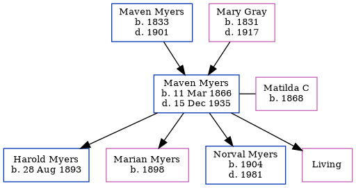

Isabella Meyers 1863 -
[ Home ] | [ Calendar ] | [ Surnames Index ] | [ Census Index ] | [ Family History ]The child of Maven Myers (a coal miner) and Mary Gray, Isabella Meyers was born in Pennsylvania, USA in 18631. On Jun 1, 1880, she was living in Lackawanna, Pennsylvania, USA1.
Parents
- Maven was born in 1833
- Mary was born in 1831
Citations
- Us Census 1880 - Findmypast (was age 17 and the daughter of the head of the household)
Family Tree
Generated by ged2site. Last updated on Jun 11, 2024